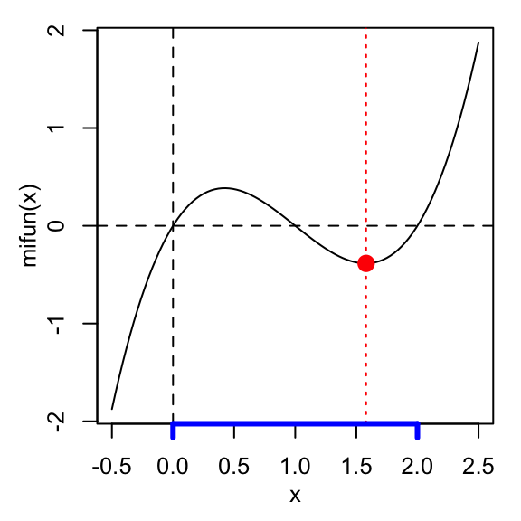
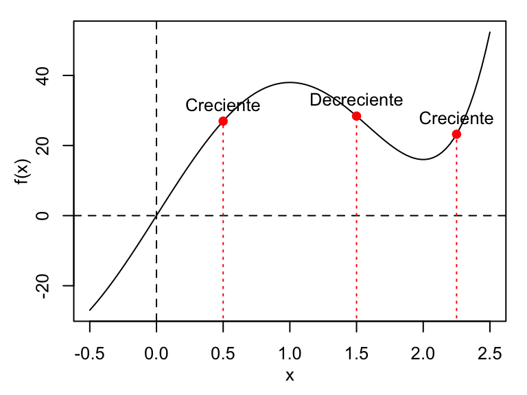

6.4 Solución a ejercicios seleccionados
6.4.1 Ej. 2. Factura con IVA
El siguiente código crea la función o comando solicitado:
factura <- function(prod, iva = 0.16){
# Argumentos:
# prod = precio especifico del producto (sin el iva)
# iva = fraccion (entre 0 y 1) que indica el iva aplicado.
# Por defecto, 0.16
# Codigo:
iva2 <- round(iva*100, 0) # se da formato al iva para presentacion
vp <- prod # valor del producto
ivap <- prod*iva # valor del iva asociado al producto
vpt <- vp + ivap # valor total a pagar
# Se crea el data.frame de salida.
data.frame(
Item = c('Producto', paste0('IVA', ' (', iva2, '%', ')' ), 'Total'),
Valor = c(vp, ivap, vpt)
)
# Valor
# se entrega un data.frame con dos filas y dos columnas.
}Ahora se prueba la función. Por ejemplo, supongamos un producto con un valor de $13000 y con IVA del 16%, entonces:
Item Valor
1 Producto 13000
2 IVA (16%) 2080
3 Total 15080Con el mismo valor del producto, si el IVA fuera 19%, entonces (note que como cambia la impresión del IVA en la tabla de salida):
Item Valor
1 Producto 13000
2 IVA (19%) 2470
3 Total 154706.4.2 Ej. 6. Encontrando mínimos o máximos
El siguiente código crea la función o comando solicitado:
min_fun <- function(x0, x1, f, e = 0.01){
# argumentos:
# x0 = valor inicial del intervalo de x donde se desea buscar el minimo
# x1 = valor final del intervalo de x donde se desea buscar el minimo
# f = nombre de la funcion matematica a evaluar.
# e = tamano de paso para buscar el minimo. Por defecto 0.01. Entre mas pequeno,
# mas exacto es a la hora de reportar el minimo.
# Codigo
x <- seq(x0, x1, e)
pos.min <- which.min(f(x))
data.frame(x = x[pos.min], y = f(x[pos.min]) )
# Valor:
# entrega un data.frame de una fila y dos columnas
}Ahora se prueba el comando generado con la función matemática \(f(x) = x(x -1)(x-2)\) en el intervalo \(0 < x < 2\):
# se crea la funcion matematica
mifun <- function(x) x*(x -1)*(x-2)
# se determina el minimo en el intervalo (0,2)
res_min <- min_fun(x0 = 0, x1 = 2, f = mifun)
res_min x y
1 1.58 -0.384888Así, el mínimo de la función \(f(x) = x(x -1)(x-2)\) en el intervalo \(0 < x < 2\) se halla en \(x = 1.58\). Esto se puede verificar si se gráfica la función:
par(mar = c(3.5, 3.5, 1,1), mgp = c(2,1,0), cex = 0.8) # ventana grafica
curve(mifun, from = -0.5, to = 2.5) # curva ppal
abline(h = 0, v = 0, lty = 2) # lineas de referencia en (0,0)
points(res_min, pch = 19, col = 'red', cex = 1.5) # se agrega punto minimo
abline(v = res_min$x, lty = 3, col = 'red') # se agrega linea de referencia en min
axis(side = 1, at = c(0,2),
labels = NA, col = 'blue', lwd = 3) # se marca el eje en el intervalo (0,2)
Si se busca mayor exactitud para el valor de \(x\) donde se halla el mínimo, es decir, mejorar la aproximación, entonces disminuya la cantidad e:
# se determina el minimo en el intervalo (0,2)
res_min <- min_fun(x0 = 0, x1 = 2, f = mifun, e = 0.0001)
res_min x y
1 1.5774 -0.3849002Ahora, el mínimo se reporta en \(x = 1.5774\).
Por otro lado, podemos generalizar el comando min_fun para que encuentre puntos mínimos o máximos, es decir, puntos críticos en general. Esto se puede hacer agregando un argumento lógico que le índique a la función si se busca un mínimo o un máximo:
critico_fun <- function(x0, x1, f, min = T, e = 0.01){
# argumentos:
# x0 = valor inicial del intervalo de x donde se desea buscar el minimo o maximo
# x1 = valor final del intervalo de x donde se desea buscar el minimo o maximo
# f = nombre de la funcion matematica a evaluar.
# min = valor logico que indica si se quiere buscar un minimo (TRUE, por defecto)
# o un maximo (FALSE)
# e = tamano de paso para buscar el minimo o maximo. Por defecto 0.01. Entre mas pequeno,
# mas exacto es a la hora de reportar el resultado.
# Codigo
x <- seq(x0, x1, e)
pos.critico <- ifelse(min, which.min(f(x)), which.max(f(x)) )
data.frame(x = x[pos.critico], y = f(x[pos.critico]) )
# Valor:
# entrega un data.frame de una fila y dos columnas
}Ver un ejemplo de la aplicación de este nuevo comando en la solución del ejercicio 8.
6.4.3 Ej. 8. ¿Creciente o decreciente?
De acuerdo a la definición de la sección 1.1 del libro de Stewart & Day (2015), una función, \(f(x)\), es creciente en un intervalo \([a, b]\), si \(f(b) > f(a)\) siempre que \(b > a\). El siguiente código crea el comando solicitado:
eval_crec_fun <- function(x, f, e = 0.01){
# Argumentos:
# x = punto medio en eje x alrededor del cual se busca evaluar si
# la funcion f es creciente o decreciente.
# f = nombre de la funcion matematica a evaluar. Debe recibir como
# unico argumento la x
# e = cantidad pequena para generar el intervalo simetrico
# alrededor del punto en x donde se realizara la evaluacion.
# Codigo:
y0 <- f(x-e)
y1 <- f(x+e)
ifelse(y1 > y0, 'Creciente', 'Decreciente')
# Valor:
# Entrega una cadena de texto indicando 'Creciente'
# o 'Decreciente'. Si y1 == y0, entrega 'Decreciente'.
# Cuando y1 == y0 es porque x es un punto critico, de modo
# que ahi, la funcion no crece o decrece. Esto es algo
# que esta funcion no podria detectar.
}Ahora se prueba el comando eval_crec_fun con la función \(f(x) = 3x^5 - 25x^3 + 60x\) en \(x = 0.5\), \(x = 1.5\), y \(x = 2.25\):
# Se define la funcion a evaluar:
f <- function(x) 3*x^5 - 25*x^3 + 60*x
# Se evalua el crecimiento:
eval_crec_fun(x = 0.5, f = f)[1] "Creciente"[1] "Decreciente"[1] "Creciente"Como esta configurada, el comando eval_crec_fun permite recibir un vector de números para hacer una evaluación simultanea de varios \(x\):
[1] "Creciente" "Decreciente" "Creciente" Ahora graficamos \(f(x)\) para validar el resultado obtenido:
par(mar = c(3.5, 3.5, 1,1), mgp = c(2,1,0), cex = 0.8) # ventana grafica
curve(f, from = -0.5, to = 2.5) # curva ppal
abline(h = 0, v = 0, lty = 2) # lineas de referencia en (0,0)
segments(x0 = xm, x1 = xm, y0 = -50,
y1 = f(xm), lty = 3, col = 'red') # Segmentos de referencia
points(x = xm, y = f(xm), pch = 19, col = 'red') # puntos evaluados
text(x = xm, y = f(xm), labels = res, pos = 3 ) # Se agrega texto resultante
Note que \(f(x)\) parece tener un máximo cercano a \(x = 1\) y un mínimo cercano a \(x = 2\). Para verificar esto, podemos usar el comando critico_fun desarrollado en la solución del ejercicio (8):
x y
1 1 38 x y
1 2 16Note que los puntos críticos se encuentran exactamente en \(x = 1\) (máximo) y \(x = 2\) (mínimo). En estos puntos la función no crece ni decrece. Sin embargo, ¿podría el comando eval_crec_fun detectar esta situación? La respuesta es no, observe:
[1] "Creciente"[1] "Creciente"Note que en ambos casos, indica creciente, cuando debería indicar algo como ni crece ni decrece. Esto ocurre porque el comando eval_crec_fun evalua la función, no exactamente en el punto \(x\), si no, en el intervalo (x - e, x + e) para el cual el punto \(x\) está en la mitad. No obstante, si podemos solicitar valores cercanos al punto crítico, por ejemplo \(x = 1\), por debajo y por encima, y usuar un e muy pequeño para ver el cambio de creciente a decreciente (o viceversa). Observe:
# La funcion crece o decrece alrededor de x = 1 (punto critico) ?
res <- eval_crec_fun(x = c(0.9, 0.95, 0.99, 1.01, 1.05, 1.1), f = f, e = 0.001)
res[1] "Creciente" "Creciente" "Creciente" "Decreciente" "Decreciente"
[6] "Decreciente"# Se entregan los resultados en un data.frame:
data.frame(
x = c(0.9, 0.95, 0.99, 1.01, 1.05, 1.1),
comportamiento = res
) x comportamiento
1 0.90 Creciente
2 0.95 Creciente
3 0.99 Creciente
4 1.01 Decreciente
5 1.05 Decreciente
6 1.10 DecrecienteReferencias
Stewart, J., & Day, T. (2015). Biocalculus: Calculus, probability, and statistics for the life sciences. Cengage Learning.